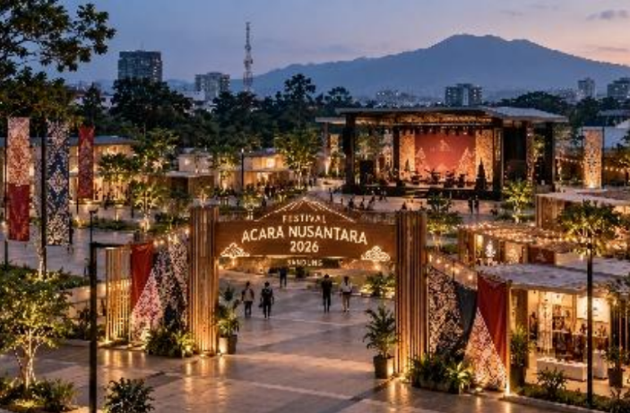

Explore Science, Inspire the Future
Beranda | Acara | Jadwal | Pendaftaran| Nama Acara | : | Festival Sains Nusantara |
| Tema | : | Explore Science, Inspire the Future |
| Penyelenggara | : | Nusantara Science Community |
| Deskripsi | ||
| Festival Sains Nusantara 2026 merupakan kegiatan yang menghadirkan seminar, workshop, dan kompetisi sains bagi pelajar, mahasiswa, dan masyarakat umum. | ||
|  |
||
| Informasi Acara | ||
|
||
Peserta dapat mengikuti kegiatan eksperimen dan pembelajaran sains secara langsung melalui workshop yang disediakan.
Kompetisi SainsKompetisi memberikan kesempatan kepada peserta untuk menampilkan ide dan proyek sains mereka.
Seminar SainsSeminar menghadirkan pembicara untuk berbagi pengetahuan tentang perkembangan sains dan teknologi terkini.